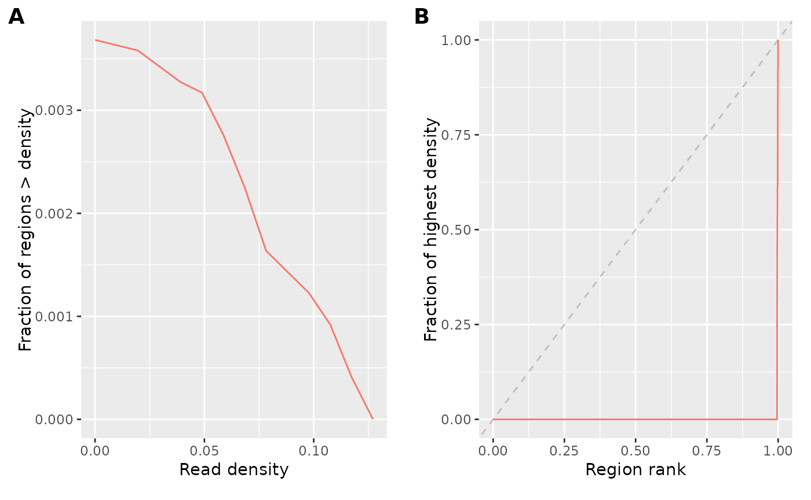

Miscellaneous epiwraps functions
Pierre-Luc Germain
Lab of Statistical Bioinformatics, University of Zürich;D-HEST Institute for Neuroscience, ETH Zürich, Switzerlandmisc.RmdAbstract
This vignette introduces some more isolated epiwraps functions.
Quality control
Coverage statistics
Coverage statistics give an overview of how the reads are distributed
across the genome (or more precisely, across a large number of random
regions). The getCovStats will compute such statistics from
bam or bigwig files (from bigwig files will be considerably faster, but
if the files are normalized the coverage/density will be relative).
Because our example data spans only part of a chromosome, we’ll
exclude completely empty regions using the exclude
parameter, which would normally be used to exclude regions likely to be
technical artefacts (e.g. blacklisted regions).
suppressPackageStartupMessages(library(epiwraps))
# get the path to an example bigwig file:
bwf <- system.file("extdata/example_atac.bw", package="epiwraps")
cs <- getCovStats(bwf, exclude=GRanges("1", IRanges(1, 4300000)))
plotCovStats(cs)
Panel A shows the proportion of sampled regions which are above a certain read density (relative because this is a normalized bigwig file, would be coverage otherwise). This shows us, for example, that as expected only a minority of regions have any reads at all (indicating that the reads are not randomly distributed). Panel B is what is sometimes called a fingerprint plot. It similarly shows us that the reads are concentrated in very few regions, since the vast majority of regions have only a very low fraction of the coverage of a few high-density regions. Randomly distributed reads would go along the diagonal, but one normally has a curve somewhere between this line and the lower-right corner – the farther away from the diagonal, to more strongly enriched the data is.
This can be done for multiple files simultaneously. If we have
several files, we can also use the coverage in the random windows to
computer their similarity (see ?plotCorFromCovStats).
Fragment length distributions
Given one or more paired-end bam files, we can extract and plot the fragment length distribution using:
fragSizesDist(bam, what=100)Peak calling
A very experimental peak calling function can be used, either against an input control or against local or global backgrounds:
p <- callPeaks(bam, fragLength=50)Note that this function is still under heavy development, and its usage at the moment is discouraged!
Region overlapping
The GenomicRanges package offers fast and powerful
functions for overlapping genomic regions. epiwraps
includes wrappers around those for common tasks, such as calculating and
visualizing overlaps across multiple sets of regions (see
?regionUpset, ?regionOverlaps, and
?regionCAT).
Session information
## R version 4.4.2 (2024-10-31)
## Platform: x86_64-pc-linux-gnu
## Running under: Ubuntu 24.04.1 LTS
##
## Matrix products: default
## BLAS: /usr/lib/x86_64-linux-gnu/openblas-pthread/libblas.so.3
## LAPACK: /usr/lib/x86_64-linux-gnu/openblas-pthread/libopenblasp-r0.3.26.so; LAPACK version 3.12.0
##
## locale:
## [1] LC_CTYPE=C.UTF-8 LC_NUMERIC=C LC_TIME=C.UTF-8
## [4] LC_COLLATE=C.UTF-8 LC_MONETARY=C.UTF-8 LC_MESSAGES=C.UTF-8
## [7] LC_PAPER=C.UTF-8 LC_NAME=C LC_ADDRESS=C
## [10] LC_TELEPHONE=C LC_MEASUREMENT=C.UTF-8 LC_IDENTIFICATION=C
##
## time zone: UTC
## tzcode source: system (glibc)
##
## attached base packages:
## [1] grid stats4 stats graphics grDevices utils datasets
## [8] methods base
##
## other attached packages:
## [1] epiwraps_0.99.106 EnrichedHeatmap_1.36.0
## [3] ComplexHeatmap_2.22.0 SummarizedExperiment_1.36.0
## [5] Biobase_2.66.0 GenomicRanges_1.58.0
## [7] GenomeInfoDb_1.42.3 IRanges_2.40.1
## [9] S4Vectors_0.44.0 BiocGenerics_0.52.0
## [11] MatrixGenerics_1.18.1 matrixStats_1.5.0
## [13] BiocStyle_2.34.0
##
## loaded via a namespace (and not attached):
## [1] RColorBrewer_1.1-3 rstudioapi_0.17.1 jsonlite_1.9.0
## [4] shape_1.4.6.1 magrittr_2.0.3 GenomicFeatures_1.58.0
## [7] farver_2.1.2 rmarkdown_2.29 GlobalOptions_0.1.2
## [10] fs_1.6.5 BiocIO_1.16.0 zlibbioc_1.52.0
## [13] ragg_1.3.3 vctrs_0.6.5 memoise_2.0.1
## [16] Rsamtools_2.22.0 RCurl_1.98-1.16 base64enc_0.1-3
## [19] htmltools_0.5.8.1 S4Arrays_1.6.0 progress_1.2.3
## [22] curl_6.2.1 SparseArray_1.6.1 Formula_1.2-5
## [25] sass_0.4.9 bslib_0.9.0 htmlwidgets_1.6.4
## [28] desc_1.4.3 plyr_1.8.9 Gviz_1.50.0
## [31] httr2_1.1.0 cachem_1.1.0 GenomicAlignments_1.42.0
## [34] lifecycle_1.0.4 iterators_1.0.14 pkgconfig_2.0.3
## [37] Matrix_1.7-1 R6_2.6.1 fastmap_1.2.0
## [40] GenomeInfoDbData_1.2.13 clue_0.3-66 digest_0.6.37
## [43] colorspace_2.1-1 AnnotationDbi_1.68.0 textshaping_1.0.0
## [46] Hmisc_5.2-2 RSQLite_2.3.9 labeling_0.4.3
## [49] filelock_1.0.3 httr_1.4.7 abind_1.4-8
## [52] compiler_4.4.2 withr_3.0.2 bit64_4.6.0-1
## [55] doParallel_1.0.17 backports_1.5.0 htmlTable_2.4.3
## [58] BiocParallel_1.40.0 DBI_1.2.3 UpSetR_1.4.0
## [61] biomaRt_2.62.1 rappdirs_0.3.3 DelayedArray_0.32.0
## [64] rjson_0.2.23 tools_4.4.2 foreign_0.8-87
## [67] nnet_7.3-19 glue_1.8.0 restfulr_0.0.15
## [70] checkmate_2.3.2 cluster_2.1.6 generics_0.1.3
## [73] gtable_0.3.6 BSgenome_1.74.0 ensembldb_2.30.0
## [76] data.table_1.17.0 hms_1.1.3 xml2_1.3.6
## [79] XVector_0.46.0 foreach_1.5.2 pillar_1.10.1
## [82] stringr_1.5.1 circlize_0.4.16 dplyr_1.1.4
## [85] BiocFileCache_2.14.0 lattice_0.22-6 deldir_2.0-4
## [88] rtracklayer_1.66.0 bit_4.5.0.1 biovizBase_1.54.0
## [91] tidyselect_1.2.1 locfit_1.5-9.11 pbapply_1.7-2
## [94] Biostrings_2.74.1 knitr_1.49 gridExtra_2.3
## [97] bookdown_0.42 ProtGenerics_1.38.0 xfun_0.51
## [100] stringi_1.8.4 UCSC.utils_1.2.0 lazyeval_0.2.2
## [103] yaml_2.3.10 evaluate_1.0.3 codetools_0.2-20
## [106] interp_1.1-6 GenomicFiles_1.42.0 tibble_3.2.1
## [109] BiocManager_1.30.25 cli_3.6.4 rpart_4.1.23
## [112] systemfonts_1.2.1 munsell_0.5.1 jquerylib_0.1.4
## [115] dichromat_2.0-0.1 Rcpp_1.0.14 dbplyr_2.5.0
## [118] png_0.1-8 XML_3.99-0.18 parallel_4.4.2
## [121] pkgdown_2.1.1 ggplot2_3.5.1 blob_1.2.4
## [124] prettyunits_1.2.0 jpeg_0.1-10 latticeExtra_0.6-30
## [127] AnnotationFilter_1.30.0 bitops_1.0-9 viridisLite_0.4.2
## [130] VariantAnnotation_1.52.0 scales_1.3.0 crayon_1.5.3
## [133] GetoptLong_1.0.5 rlang_1.1.5 cowplot_1.1.3
## [136] KEGGREST_1.46.0